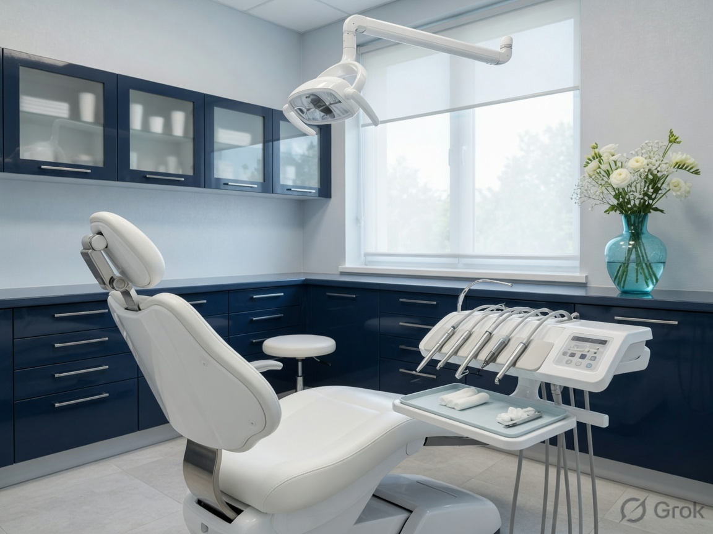
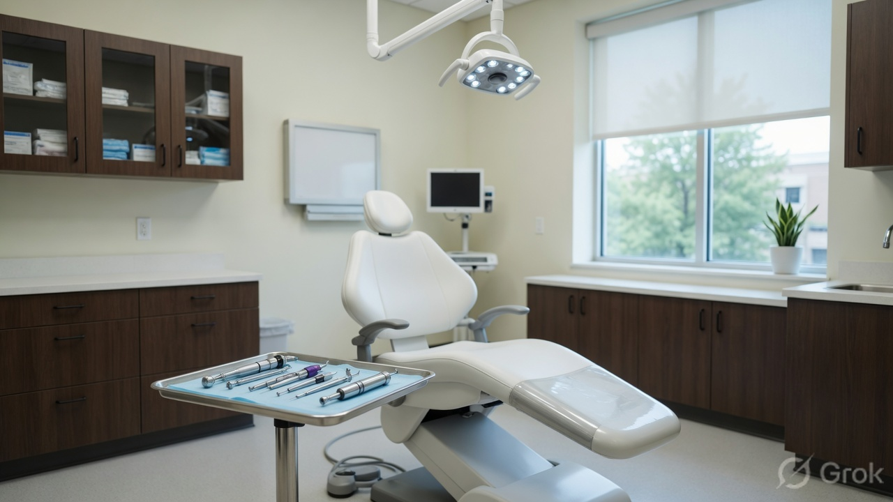

Reception lounge
A quiet wait before you are called. Forms and first questions happen here, not in the corridor.
About
Elegancia Dental was founded by Dr. Tasveer Fatima to bring specialist oral surgery and everyday family dentistry to Khurram Nagar.
The clinician
Dr. Tasveer Fatima is an Oral & Maxillofacial Surgeon (BDS, MDS) and the founder of Elegancia Dental Clinic. She has more than 15 years of experience in implants, jaw surgery, trauma, and complete family dentistry.
The main centre is on Picnic Spot Road, opposite BPF, near Ibrahim Masjid in Sector 8, Khurram Nagar. A second centre serves patients in Bakshi Ka Talab. The clinic identifies as women-owned and LGBTQ+ friendly.
How we work
The rooms
A quiet wait before you are called. Forms and first questions happen here, not in the corridor.

Check-ups, root canals, and family dentistry in a private chair with digital imaging when needed.

Implants, wisdom teeth, and maxillofacial work planned by Dr. Tasveer Fatima.
Meet the surgeon
Picnic Spot Road, Khurram Nagar. Open seven days.